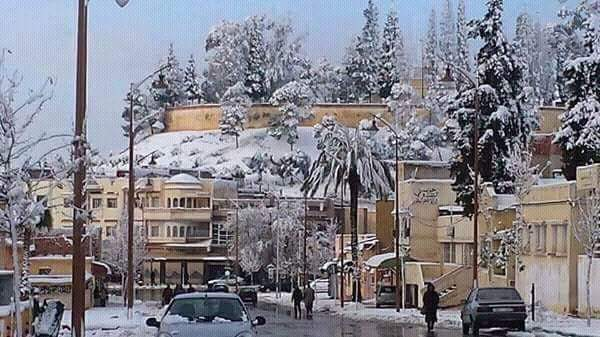
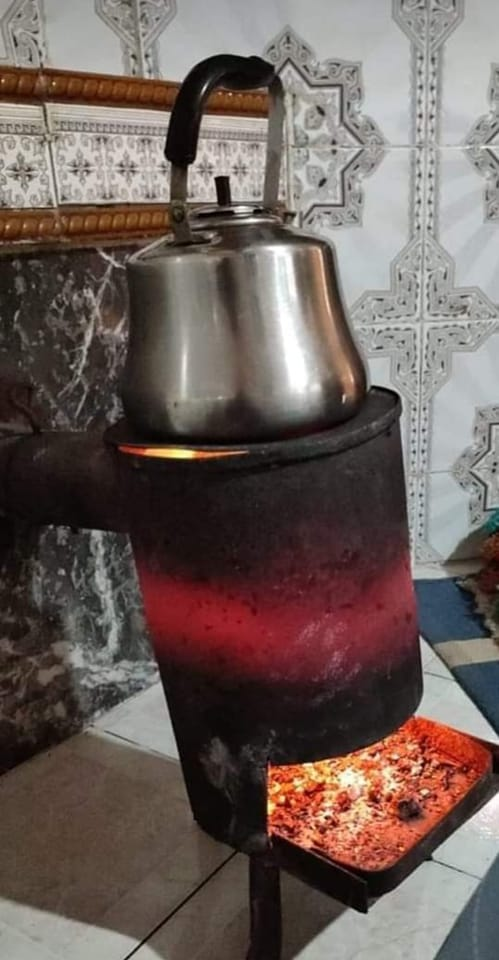
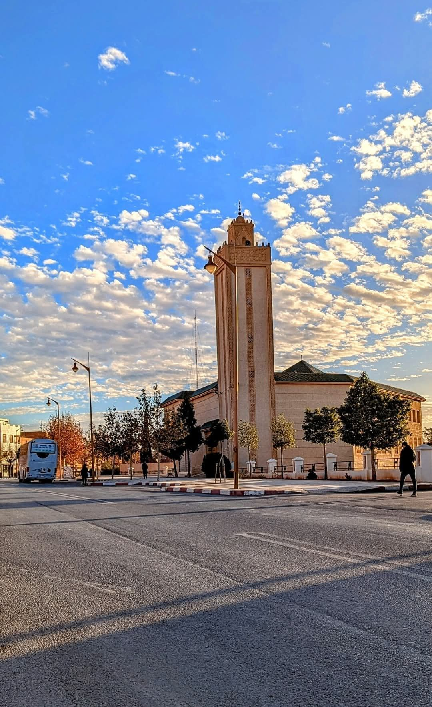
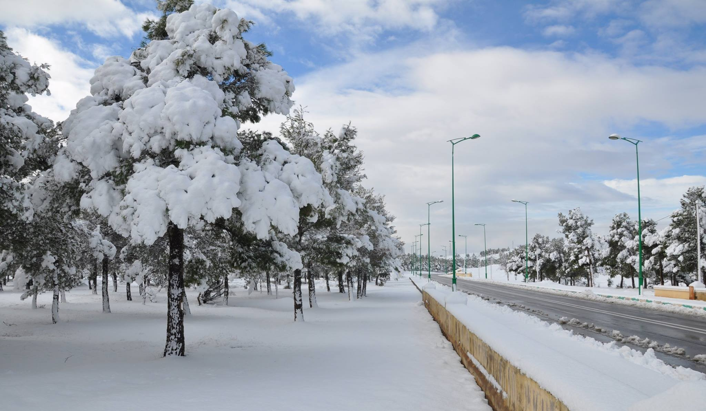
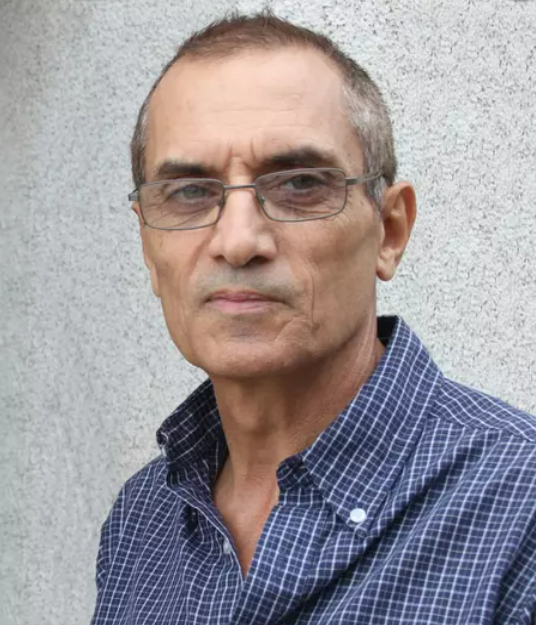
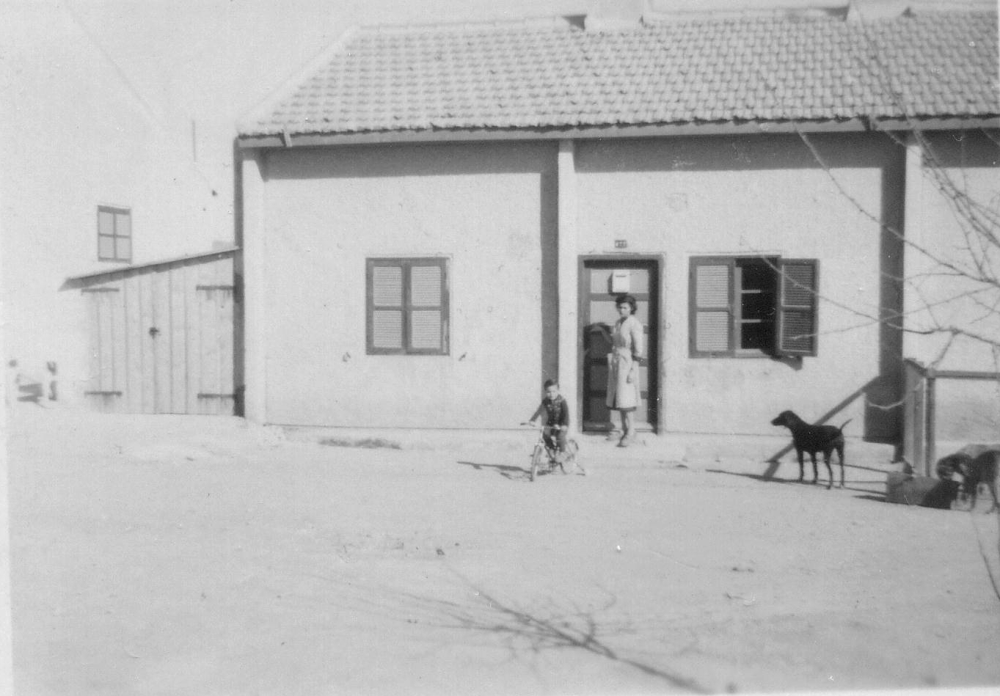
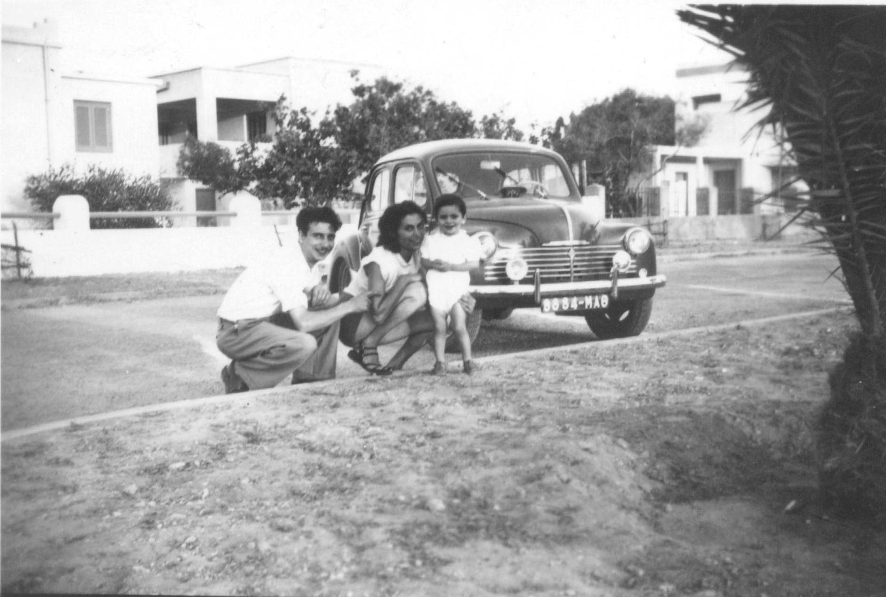
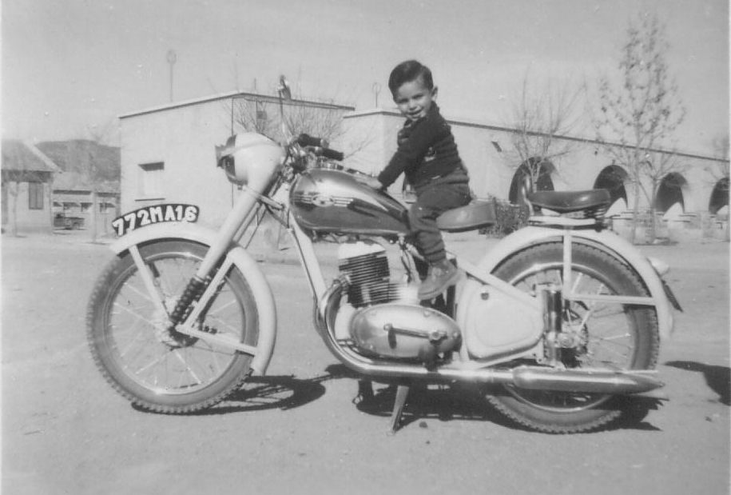

Découvrez l'histoire, la beauté et la vie de notre chère ville.
À tous les JERADIs, près ou loin, hier et aujourd'hui : que notre patrimoine, nos souvenirs et notre amour pour cette ville unique continuent de nous unir.
Bienvenue à Jerada
Jerada est une ville riche en histoire et traditions. De ses ruelles anciennes à la chaleur de ses habitants, notre ville raconte une histoire faite de rencontres, de migrations et d'évolutions culturelles.
Histoire et Patrimoine
Une Ville aux Multiples Visages
Autrefois marquée par l'activité minière – qui a contribué au développement économique – Jerada se distingue aujourd'hui par la richesse de son patrimoine culturel et social. Les anciens quartiers, les établissements scolaires et les espaces publics témoignent d'une histoire faite d'efforts, de traditions et d'une vie communautaire animée.
Les récits des anciens, les photos d'époque et les archives locales permettent de se replonger dans un passé qui continue d'inspirer l'avenir de la ville.
Galerie de Photos




Communauté et Témoignages
Un grand merci à Denis Delforn pour nous avoir généreusement fourni le contenu.
Les habitants de Jerada, anciens et actuels, partagent ici leurs souvenirs et anecdotes.
Denis Delforn

J'ai vécu à Jerada avec mes parents de 1954 à 1962. J'ai fréquenté l'école européenne, celle qui s'appelle aujourd'hui l'école des Charbonnages ; elle est face à la place quand on rentre à Jerada en venant d'Oujda. J'y ai fait mes classes du CP au CM1. Les directeurs qui se sont succédés et que ma mère a connus sont monsieur Barbet (dont l'épouse était institutrice dans la même école) puis brièvement monsieur Louis Bouyge (dont l'épouse Henriette était institutrice à l'école musulmane) puis monsieur Jacques Mateille (dont l'épouse Jacqueline était institutrice dans la même école).
L'école européenne, lieu de mes premiers apprentissages
J'ai fait ma communion privée à l'église Sainte Barbe.
Ma mère, Jacqueline Delforn, était institutrice à l'école européenne, elle faisait les CP. C'est elle qui m'a appris à lire. Elle a été détachée une année, en 1955-56, en CP aussi, à l'école musulmane des filles. Mon père, Abdon Delforn, réparait les radios de tous les environs à notre second domicile, juste à côté de l'école européenne.

Notre première maison au "Carton", n°177
C'est en 1954 que mes parents ont quitté la France parce que ma mère venait d'obtenir un poste d'institutrice à Jerada, son premier poste. Mes parents n'ayant pas d'auto, ils ont quitté la France avec 2 valises et moi sous le bras, jusqu'à Oran sur le bateau "El Mansour". Depuis Oran, ils ont rejoint Jerada comme ils ont pu. Une maison leur a été attribuée au "Carton", le n°177, le logement de fonction de ma mère. Mon père a d'abord travaillé à l'atelier électrique de la mine une paire d'années, avant de s'installer à son compte pour vendre et réparer les radios. Son grossiste était monsieur Pignal à Oujda.

Mon père, ma mère et moi avec la 4cv
Nous sommes revenus en vacances en France la première fois avec les bateaux "El Mansour" dans un sens et "El Djezair" dans l'autre, toujours sans auto. Mes parents ont ensuite eu les moyens d'acheter leur première voiture, une 4 cv d'occasion, un vrai luxe ! A partir de là, nous avons pu partir en vacances par les lignes Ceuta-Melilla puis Tanger-Gibraltar. Après la 4 cv sont venues successivement deux voitures neuves, la Dauphine puis la Fiat 1100.

Je suis sur la moto de mon oncle
C'est avec une profonde tristesse que j'ai quitté Jerada en 1962 où j'ai passé une jeunesse très heureuse.
Daniel Herrmann
Je suis né à Jerada en 1951.
Daniel Alberola
Je suis né en 1947. J'ai 2 frères : Alain né en 1950 et Luc né en 1955. J'habitais au n°406. Mes parents avaient à la fin le studio photo de Jerada. Je recherche Stéphanie Barkoviak. CP 1953-54 Jacqueline DELFORN.
François Moya
Je suis né à Jerada en août 1948. Mes parents y sont restés jusqu'en 1972, moi je suis rentré à Paris pour mes études en 1965.
Marie Laure Bialès
Je suis née en 1954 à Jerada. J'ai un frère : Hugues. Mon père Roger travaillait aux charbonnages ; ma maman était institutrice à l'école marocaine, route d'Hassi Blal. Nous avons habité au n°217 en 1956, puis au n°183, en bas de l'église, jusqu'en 1962. Je voudrais les coordonnées de Laurence Marteau pour reprendre contact.
Hervé Mélenchon
Je suis né en 1952. Nous sommes 5 frères et soeurs : Monique, Renée, moi Hervé, Thierry et Muriel. Mon père René était chef de poste au B12, à la mine.
Monique Mélenchon
CM2 de Jacques MATEILLE, le Directeur de l'école.
Andrée et Françette Leclère
Nous avons vécu à Jerada de 1960 à 1971. Nous aimerions avoir des nouvelles de la famille Benali dont le père tenait l'épicerie en face du cinéma et s'occupait de l'auto école ; nous sommes allées à l'école avec ses enfants Touria et Hamid.
Fayssal Mouiha
Je suis un passionné des photos anciennes de ma ville natale. En voici quelques unes.
Ascension, Francine et Jean-Marie Salinas
Jean-Marie : j'ai quitté Jerada en 1963. Je suis le petit-fils de Marie Miranda (la nounou dont la photo est ci-dessus dans l'espace de Marie-Laure Bialès).
Samir Boukili
Ma maman, Fatna MEHDAOUI (Fafa) à l'école IBN SINA.
Evelyne Ravoux
Je suis née à Jérada le 10 juin 1952. Mon père travaillait à la mine, au parc à bois. Il est décédé en décembre 1966.
Catherine Molinier
Je suis née à Jerada le 05/02/1952. Ma soeur aînée, Annick Molinier, est née en 1947 à Rabat et mon frère Patrick est né en 1949 à Jerada.
Angélique Bouriez
Mon grand-père, Henri Bouriez, mineur (porion) dans le Pas-de-Calais, commence en février 1949 les démarches en vue d'intégrer les Charbonnages Nord Africains d'El Aouinet, et part à Jerada en juin 1949 en qualité de célibataire.
Bernard Ramon
Avec mes parents et mon frère Daniel, nous habitions au n°33, la première maison du côté gauche sur la place quand on regarde depuis l'école.
Ahmed Zrhahou
Suzanne Buchelet
J'ai vécu à Jerada de 1948 à 1961. Mon père, François Buchelet, a été mineur puis chef porion : ma mère a tenu le bar "la maison du mineur". Mon mari, Albert Dujon, a été chef porion de 1948 à 1962.
Marie Lutor
J'ai vécu à Jerada jusqu'en 1974. Jiliane Ravoux est la marraine de ma soeur Jeanine.
Jean-Marie Locci
Je suis né à Oujda en 1955. J'ai habité Jerada jusqu'en 1965. Mon père était ingénieur à la mine. Nous habitions en haut de la côte qui partait du cercle des ingénieurs. Je vis aujourd'hui en Australie.
Marie-France et de Nadine Leleu
Notre père Maurice Leleu était chef porion à la mine, notre mère Thérèse mère au foyer. Moi, Marie-France, je suis née à Jerada en 1954.
Christine Delbos
C'est drôle d'échanger (c'est la toute première fois que cela m'arrive !) avec des gens qui ont, à un moment de leur vie, respiré le même air, foulé la même terre, fréquenté les mêmes endroits.
Denis Gonzalez et de Francine Cerdan
Nous avons habité Jerada jusqu'en 1956, mon père Antoine Gonzalez, ma mère Manuela (dite Manoue), mon frère Gérard, ma soeur Lucienne et moi-même (Denis Gonzalez). Deux oncles et une tante vivaient là également.
Thierry Seoane
Je suis un ancien d'Hassi Blal.
Jean-Claude Nordekoff
J'ai vécu à Jerada de 1946 à 1958. Nous avons habité la maison située à droite de l'entrée de la mine (10° photo ci-dessous), ensuite au 64, puis au 164. Mon père a travaillé au magasin de la mine et au contrôle civil.